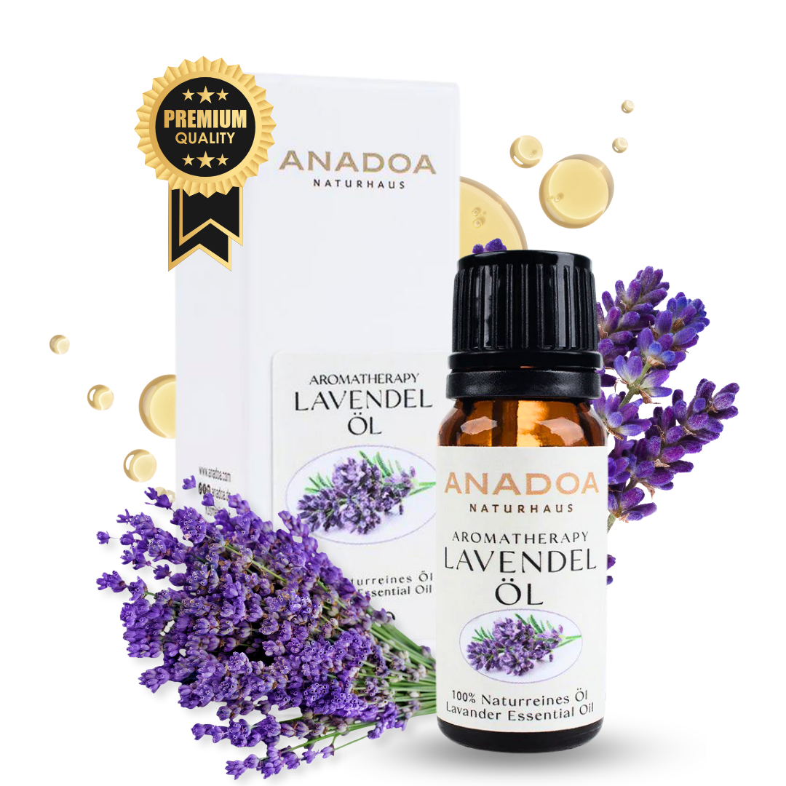

Was ist Lavendelöl?
Lavendelöl, gewonnen aus dem Echten Lavendel (Lavandula angustifolia), ist unbestritten der absolute Superstar der Aromatherapie. Seit Jahrtausenden wird dieses bemerkenswerte ätherische Öl fur seine beruhigenden, heilenden und antiseptischen Eigenschaften geschatzt. Bereits die alten Romer nutzten Lavendel, um ihre Baeder zu parfumieren und Wunden zu reinigen - daher stammt auch sein Name vom lateinischen 'lavare' (waschen).
Im Gegensatz zu vielen anderen scharfen ätherischen Ölen zeichnet sich Lavendelöl durch seine unglaubliche Sanftheit aus. Es ist das 'Schweizer Taschenmesser' der Naturheilkunde: Es beruhigt den unruhigen Geist ebenso effektiv wie irritierte Haut. Wenn es in der Welt der ätherischen Öle ein einziges Öl gabe, das in jeder Hausapotheke stehen musste, dann ist es zweifellos Lavendelöl.
Wo und wie wird Lavendelöl geerntet?
Der Echte Lavendel liebt karge, kalkhaltige Boeden und viel Sonne. Seine ursprungliche Heimat sind die rauen, hoeher gelegenen Bergregionen des Mittelmeerraumes. Besonders in der Haute-Provence (Frankreich) und in den unberuhrten Hochebenen der Turkei (z.B. in Isparta und Burdur) findet die Pflanze ideale klimatische Bedingungen. Die extreme Sonneneinstrahlung am Tag und die kuhlen Nachte zwingen die Pflanze dazu, besonders viele schutzende ätherische Öle zu produzieren.
Die Ernte von hochwertigem Lavendel erfolgt hochsommerlich, meist im Juli oder fruhen August, genau dann, wenn die Bluten ihre maximale Leuchtkraft erreicht haben und die Mittagssonne die Konzentration der ätherischen Öle in den Drusenhaaren auf ein Maximum treibt. Fur absolute Premium-Öle wird Lavendel auch heute noch oft sorgfaltig von Hand mit Sichel geerntet, um die empfindlichen Blutenrispen nicht zu zerquetschen.
Die Kunst der Destillation: Wie wird Lavendelöl hergestellt?
Echtes, naturreines Lavendelöl wird ausschliesslich durch Wasserdampfdestillation gewonnen. Die frisch geernteten (oder leicht angetrockneten) Blutenrispen werden in grosse Destillationskessel (oft aus Kupfer oder Edelstahl) gefullt. Heisser Wasserdampf wird von unten durch das Pflanzenmaterial geleitet, bricht die mikroskopisch kleinen Ölzellen auf und tragt die fluechtigen Duftmolekule mit sich.
Dieser Dampf wird anschliessend in einem Kuhlrohr kondensiert. Da ätherisches Öl leichter als Wasser ist und sich nicht damit vermischt, schwimmt das reine Lavendelöl an der Oberflache des Kondenswassers (dem sogenannten Hydrolat oder Lavendelwasser) und kann sorgfaltig abgeschoepft werden. Um einen einzigen Liter dieses kostbaren Öls zu gewinnen, benoetigt man in der Regel zwischen 130 und 150 Kilogramm frische Lavendelbluten.
Biochemie: Die Wirkstoffe im Lavendelöl
Die Magie des Lavendelöls ist kein Mythos, sondern reine, faszinierende Chemie. Ein hochwertiges Lavandula angustifolia Öl besteht aus uber 100 verschiedenen molekularen Verbindungen. Die beiden absolut dominierenden Hauptakteure sind jedoch:
- Linalool (25 - 38%): Ein Monoterpenol, das extrem stark antibakteriell, entzundungshemmend und vor allem schmerzlindernd wirkt.
- Linalylacetat (25 - 45%): Ein Ester. Dieser Stoff ist massgeblich fur die tiefenentspannende, krampfloesende und angstlosende Wirkung auf das zentrale Nervensystem verantwortlich.
- Cumarine: In Spuren enthalten, runden sie das Profil ab und haben eine stark muskelentspannende Wirkung.
Interessant: Die genaue biochemische Zusammensetzung schwankt von Jahr zu Jahr, abhangig von Sonnenstunden und Niederschlag. Ein naturreines Lavendelöl ist wie ein guter Wein - jeder Jahrgang hat seinen eigenen, subtilen Charakter.
Woran erkennen Sie 100% naturreines Lavendelöl?
Der Markt ist leider uberschwemmt von billigen Imitaten und synthetischen Parfum-Ölen, die unter dem Namen 'Lavendel' verkauft werden. So erkennen Sie Premium-Qualitat:
- Die botanische Bezeichnung: Auf dem Etikett muss zwingend Lavandula angustifolia stehen. Steht dort nur 'Lavendelduft' oder 'ParfumÖl', ist es ein rein chemisches Laborprodukt.
- Der Preis: Echtes Lavendelöl aus den Bluten ist aufwandig in der Herstellung. Ein 10ml-Flaschchen fur 2 Euro kann kein echtes, reines ätherisches Öl sein.
- Der Duft: Synthetischer Lavendel riecht sehr stechend, extrem suss und oft seifig, als wurde man an einem Waschmittel riechen. Echtes Lavendelöl hat einen komplexen, frischen, floralen, aber auch leicht krautigen, erdigen Unterton.
Anwendung: Lavendelöl richtig mischen und nutzen
Dank seiner lipophilen (fettloslichen) Eigenschaften wird Lavendelöl am besten in Kombination mit sogenannten TrägerÖlen angewendet, um sicher in die Haut einzuziehen.
- Zur Hautpflege & Narbenheilung: Mischen Sie 3-5 Tropfen Lavendelöl mit 10ml kaltgepresstem WildrosenÖl oder JojobaÖl. Dies fordert die Zellerneuerung massiv.
- Fuer tiefen Schlaf: 4 Tropfen reines Lavendelöl in den Kaltwasser-Diffuser geben, oder 1-2 Tropfen pur auf ein Papiertaschentuch traufeln und auf das Kopfkissen legen.
- Als Erste Hilfe bei leichten Verbrennungen & Stichen: 1 Tropfen unverduennt exakt auf die Stelle tupfen (verhindert oft Blasenbildung und lindert den Juckreiz sofort).
Sicherheit und haufige Anwendungsfehler bei Lavendelöl
Hinweis: Obwohl Lavendelöl als das sicherste aller ätherischen Öle gilt und sogar fur Babys (in extrem starker Verduennung) anwendbar ist, sollten Sie haufige Fehler vermeiden:
- Verwechslung der Art: Verwechseln Sie nicht den 'Echten Lavendel' (Lavandula angustifolia) mit 'Schopflavendel' (Lavandula stoechas). Letzterer enthalt hohe Mengen an Ketonen und ist neurotoxisch – er darf auf keinen Fall bei Babys oder Schwangeren angewendet werden!
- Ueberdosierung im Diffuser: Viel hilft nicht viel. 3-5 Tropfen im Raumduft-Diffuser genugen vollkommen. Eine Ueberdosierung kann, statt zu entspannen, Kopfschmerzen und paradoxerweise Unruhe auslosen.
- Innerliche Einnahme: ätherische Öle sollten von Laien niemals einfach so ins Wasser getropft und getrunken werden, da sie sich nicht mit Wasser mischen und die Schleimhaute reizen konnen.
Bewahrte Aromatherapie-Mischungen mit Lavendelöl
Lavendelöl ist ein hervorragender 'Teamplayer' und mischt sich exzellent mit ZitrusÖlen, Holzduften und floralen Noten:
- Die 'Tiefer Schlaf' Mischung: 3 Tropfen Lavendelöl + 2 Tropfen ZedernholzÖl + 1 Tropfen BergamotteÖl (Perfekt fur den Diffuser am Abend).
- Die 'Stress-Löser' Massage-Mischung: 5 Tropfen Lavendelöl + 3 Tropfen MuskatellersalbeiÖl + 2 Tropfen Ylang-Ylang-Öl gemischt in 30ml Mandelöl.
- Die 'Klare Atmung' Kinder-Mischung: 2 Tropfen Lavendelöl + 1 Tropfen sanftes Thymianöl (Linalool-Chemotyp) im Raum verdampfen, um naechtlichen Hustenreiz zu mildern.
Haufig gestellte Fragen zu Lavendelöl
Kann ich
Lavendelöl unverduennt auf die Haut auftragen?
Lavendelöl (Lavandula angustifolia) ist eines der sehr wenigen ätherischen Öle, die punktuell (z. B. auf einen Pickel oder einen leichten Insektenstich) pur aufgetragen werden koennen. Fur grossflachige Anwendungen, wie Massagen oder die tagliche Hautpflege, muss es jedoch zwingend in einem TraegerÖl (z.B. JojobaÖl) verduennt werden.
Woran
erkenne ich echtes Lavendelöl von synthetischen DuftÖlen?
Echtes Lavendelöl wird als '100% naturreines ätherisches Öl' deklariert und enthalt den botanischen Namen 'Lavandula angustifolia'. Synthetische Öle riechen oft sehr flach, seifig oder extrem suess und werden meist als 'ParfumÖl', 'DuftÖl' oder 'naturidentisch' gekennzeichnet. Sie haben keinerlei therapeutischen Nutzen.
Hift
Lavendelöl wirklich beim Einschlafen?
Ja. Zahlreiche klinische Studien haben gezeigt, dass die Inhalation von Linalool und Linalylacetat (den Hauptbestandteilen von Lavendelöl) das zentrale Nervensystem beruhigt, die Herzfrequenz senkt und die Ausschuttung von Stresshormonen reduziert. Es ist das am besten erforschte naturliche Mittel zur Foerderung der Schlafqualitat.
Gibt es
unterschiedliche Lavendelöl-Arten?
Ja, sehr viele! Der 'Echte Lavendel' (Lavandula angustifolia) ist sanft und beruhigend. 'Speiklavendel' (Lavandula latifolia) enthalt mehr Kampfer und ist anregend und gut fur die Atemwege. 'Lavandin' (Lavandula hybrida) ist eine Kreuzung, die viel Ertrag liefert, billiger ist, aber weniger beruhigende Eigenschaften besitzt.
Wie
verwende ich Lavendelöl fur meine Haare?
Geben Sie einfach 2-3 Tropfen reines Lavendelöl in Ihre Handflache, mischen Sie es mit Ihrem ublichen Shampoo oder verduennen Sie es in etwas ArganÖl fur eine Kopfhautmassage. Es beruhigt gereizte Kopfhaut, mindert Schuppen und fordert ein gesundes Haarwachstum.